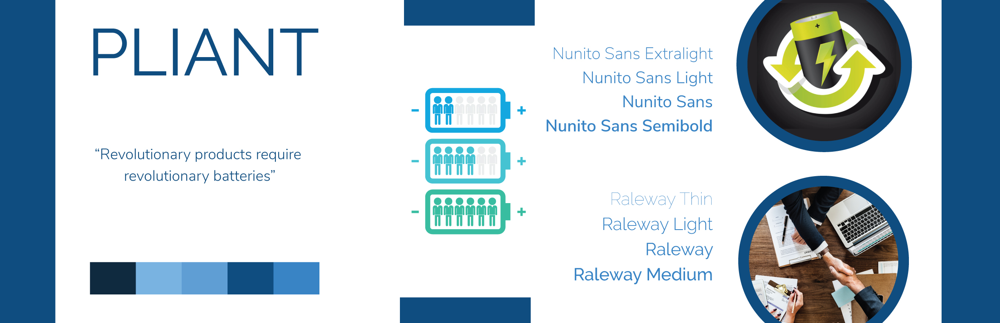

The Entrepreneurship Hatchery Portfolio
PROJECT TIMELINE - May 2018 to February 2019.
ROLES - Graphic Designer, UI / UX Designer
SKILLS INCORPORATED - Graphic Design, UI / UX Design, Wireframes, Prototyping, Marketing, Branding, Typography, Logo Design
SOFTWARE USED - Adobe Illustrator, Adobe Photoshop, Adobe XD, Adobe InDesign
LINKS - View these projects on my Behance profile
From May 2018 to February 2019, I worked as an Assistant Graphic Designer at The Entrepreneurship Hatchery at UofT. The Hatchery is a platform for students and graduates of UofT to create and manage their own startups. They provide the tools, support and resources for the same as well. The hold an annual NEST showcase, which showcases the unique ideas that students come up with every year. Some of them have also become successful companies today!
This portfolio showcases some of the best work I did at the Hatchery during my time there. My work included designing brand identities for the various startups under the Hatchery, designing promotional material for their marketing campaigns and also redesigning the Hatchery's branding, including their website. You can also view some of these projects on my Behance profile.
×


BRAND STYLESCAPE - GRUMBLE
This is a brand stylescape designed for the start-up Grumble, which is a social application providing food recommendations to users based on their friends' eating choices and restaurants they visit. This stylescape depicts a fun, easy-going and an approachable company environment due to its bright color scheme and rounded, easy-to-read typography scheme.

BRAND STYLESCAPE - SCANSCRIPT
This is a brand stylescape designed for the start-up ScanScript, which is a company creating software to automate prescription entry into pharmacy management software to enable efficient and safe prescription dispensing. This stylescape depicts a professional and experienced company environment. The color scheme uses a lot of saturation and contributes to the modern look and feel of the brand.

DESIGN CONCEPT - PULSE
Pulse is an event management start-up at the Entrepreneurship Hatchery. What makes them special is that they are using machine learning algorithms to recommend events to users. This design concept depicts the essence of the start-up and shows how their application can reach out to a variety of places.

BRAND STYLESCAPE - ADYCT
ADYCT was also one of the startups under the Hatchery, which provided an innovative approach for small businesses to use built-in platforms in screens to design advertisement contents. This stylescape uses a modern, professional look with bright colors to make the designs eye-catching.

BRAND STYLESCAPE - PLIANT
Pliant was a startup at the Hatchery creating revolutionary, eco-friendly solutions for power supply and management. This was one of the stylescapes designed for them at that time. Since then, Pliant has grown to become a successful company and has received a lot of recognition and accolades.